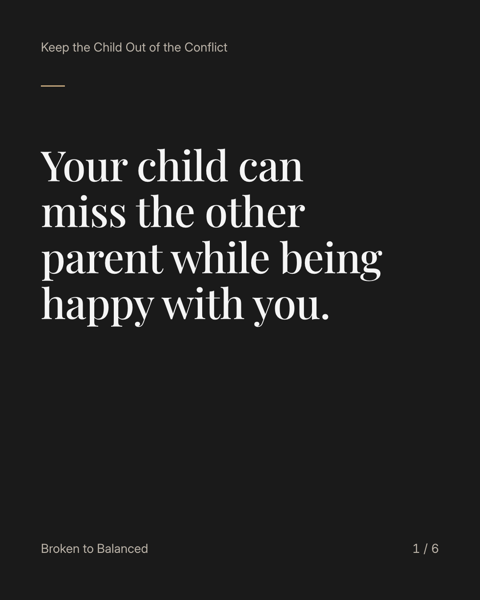
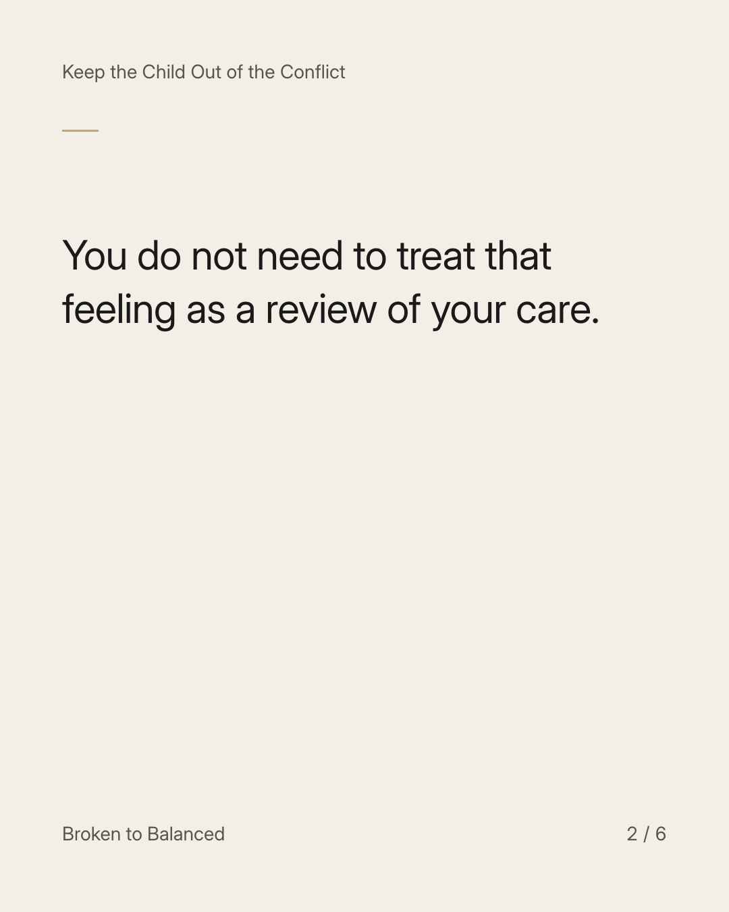
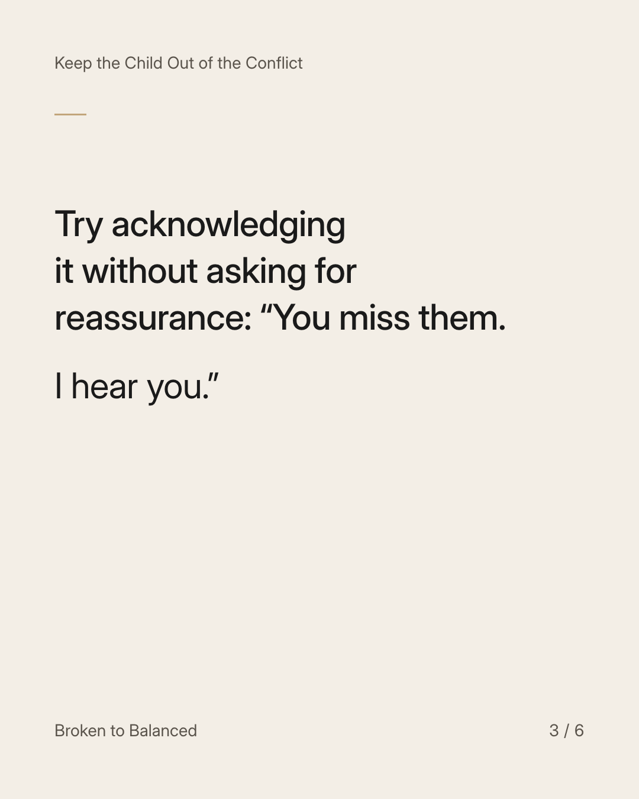
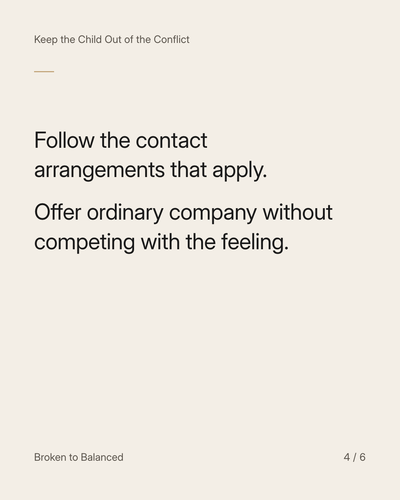
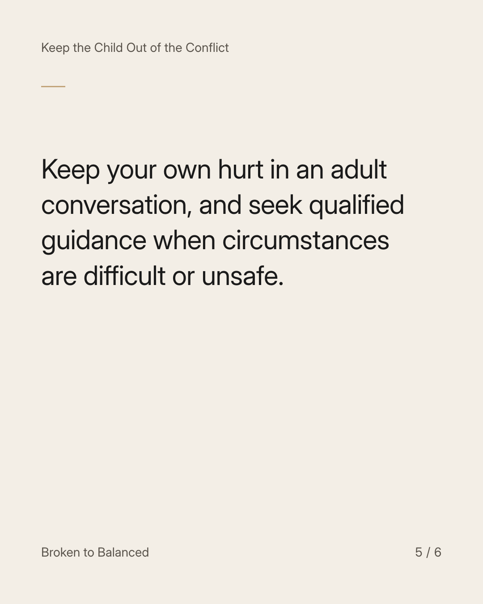
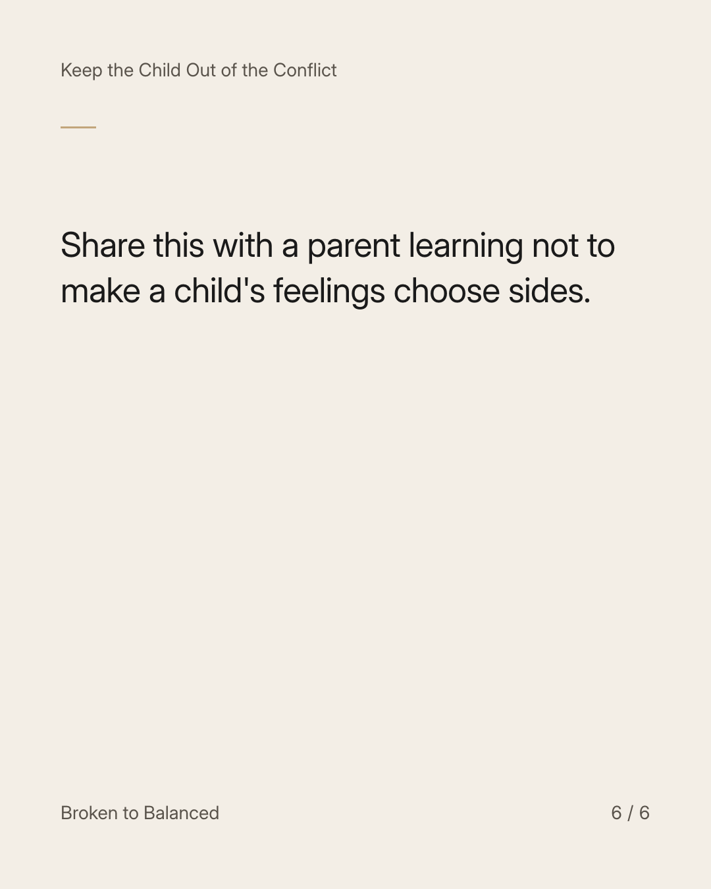

Exact text and accessibility text
Your child can miss the other parent while being happy with you.
Slide 1 of 6. Your child can miss the other parent while being happy with you.


Exact text and accessibility text
You do not need to treat that feeling as a review of your care.
Slide 2 of 6. You do not need to treat that feeling as a review of your care.


Exact text and accessibility text
Try acknowledging it without asking for reassurance: “You miss them. I hear you.”
Slide 3 of 6. Try acknowledging it without asking for reassurance: “You miss them. I hear you.”


Exact text and accessibility text
Follow the contact arrangements that apply. Offer ordinary company without competing with the feeling.
Slide 4 of 6. Follow the contact arrangements that apply. Offer ordinary company without competing with the feeling.


Exact text and accessibility text
Keep your own hurt in an adult conversation, and seek qualified guidance when circumstances are difficult or unsafe.
Slide 5 of 6. Keep your own hurt in an adult conversation, and seek qualified guidance when circumstances are difficult or unsafe.


Exact text and accessibility text
Share this with a parent learning not to make a child's feelings choose sides.
Slide 6 of 6. Share this with a parent learning not to make a child's feelings choose sides.
Exact caption
Plain-text fallback: select and copy the caption.